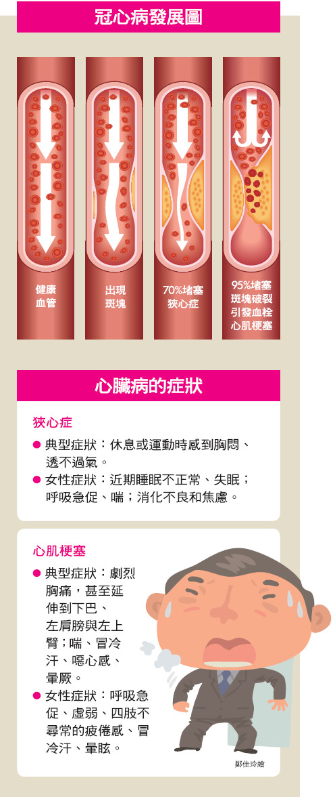
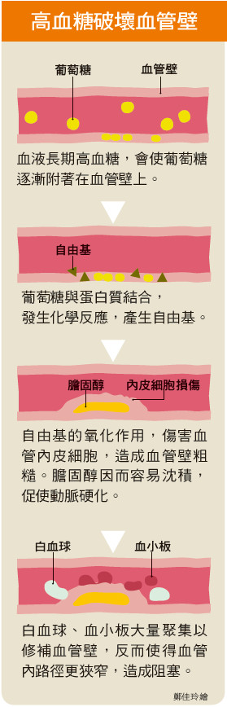

返回上一頁
心臟疾病
❆介紹
-
先天性心臟病 :
病因不詳，主要是胚胎發育時不正常所致。
-
風濕性心臟病 :
因受到溶血性鏈球菌感染咽喉炎引起風濕性心臟病，以兒童和青少年居多，主要侵犯心臟瓣膜。
-
高血壓性心臟病 :
高血壓病人的血壓若長期升高，會令左心室負荷加重而變得肥厚、擴大，最後心臟衰竭。早期
症狀並不明顯，常見的症狀有頭暈、眼花、耳鳴、心悸，嚴重時會出現呼吸困難、咳嗽、水腫等症狀。
-
冠狀動脈心臟病 :
冠狀動脈主要供給心肌血液，當冠狀動脈發生粥樣硬化(形成一種類似脂肪沉積的瘢塊)導致動脈
失去原有的彈性，管壁變厚、變硬，內腔逐漸變窄或堵塞，造成血液不易流通，使心臟肌肉因為缺血而壞死。
心絞痛、心肌梗塞是常見的冠狀動脈心臟病，更是形成猝死的主要原因。

-
高血糖對血管壁的影響 :

❆治療
- 藥物治療 :
包括降血脂藥物、降血壓藥、抗小板藥物、血栓溶解劑等可用於急性或慢性心血管疾病。
- 冠狀動脈手術 :
包括氣球擴張術、心臟支架，若病人有多條血管阻塞，則可考慮做冠狀動脈繞道手術。
- 改變生活習慣 :
1. 飲食控制：低鹽飲食，每天<6公克氯化鈉；增加綠色蔬菜及纖維食物的份量，限制飽合脂肪含量。
2.規則地運動：規則地有氧運動，如走路、跑步、游泳或騎腳踏車，可降低血壓及改善心血管機能。
3.體重控制：降低體重是有效降低高血壓的方法之一，每降低10公斤的體重約可降5-20毫米汞柱的血壓。